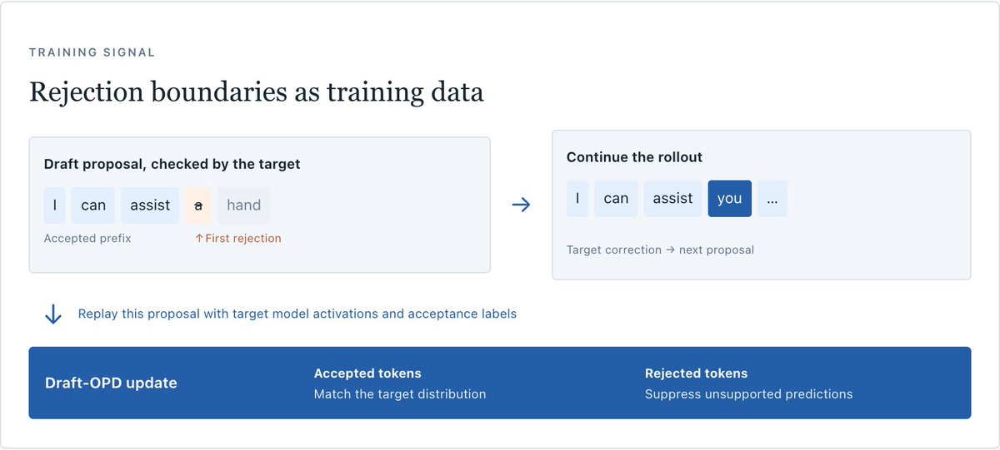
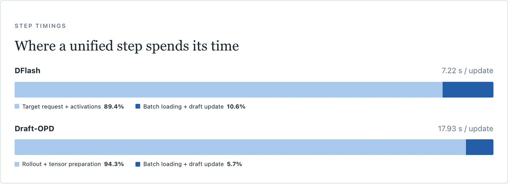
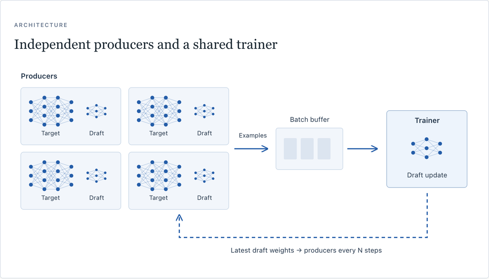
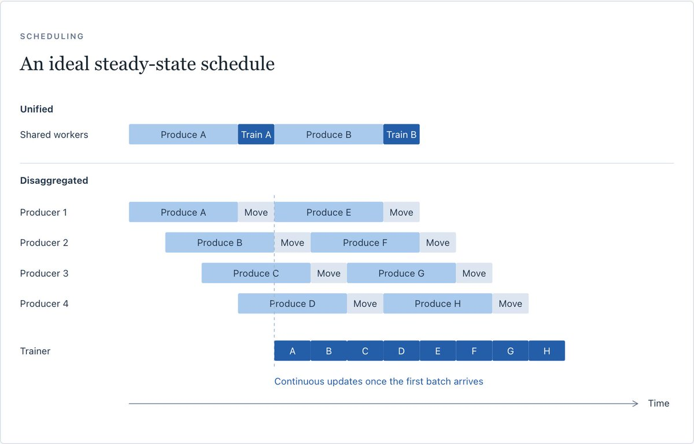

Nicholas Liu（Decagon inference lead，前Amazon Rufus）分享了投机解码训练的加速经验：把GRPO类算法的异步解耦rollout架构借过来，Draft-OPD训练的平均步时间从18.63秒降到2.44秒，7.6倍墙时加速。
这是前一篇的延续：在draft模型自己提议的验证边界上训练投机解码模型，能提升平均接受长度。DFlash2基线加Draft-OPD后，平均接受长度从3.591升到4.752，约32%。
标准DFlash训练用预生成或线上流量收集的回复，以teacher-forced前向收集target激活值来训draft。Draft-OPD不同：它在draft提议在推理中被拒绝的位置训练。被拒会截断提议，用target的反馈重播，聚焦在限制接受长度的错误上。代价是收集样本必须用训练中的draft模型跑完整rollout，并记录被拒位置。

收集样本要让draft和target一起跑，target越大，备一个batch的时间越远超draft的训练步。Trainer要等每个batch备好，训练步间隔取决于样本供应速度。
统一训练步里，rollout生成与张量准备占17.93秒中的16.90秒。生成和训练共用同一GPU，每一步必须做完才能开始下一批准备，准备时间主导了耗时。Teacher-forced的DFlash路径也一样：请求与收集target激活值占7.22秒间隔中的6.45秒。

单个producer每批要16秒，挪到独立worker上还是每16秒才供一批。解法是扩展producer池：多个副本并行准备不同的batch，有界队列按样本顺序交付，trainer拿已完成的batch接着训。
每N个训练步，trainer把最新draft权重发给producers，让它们持续从on-policy的拒绝边界采样。这个架构类似verl的全异步训练器等异步GRPO系统：生产与训练解耦，各自全速跑。

统一与解耦训练对比（含/不含Draft-OPD）：DFlash从7.960秒每更新降到1.513秒，加速5.26倍；Draft-OPD从18.628秒降到2.443秒，加速7.62倍。
DFlash的5.26倍说明这个模式通用：任何花真实时间准备样本的工作负载都适用。Draft-OPD受益更大，因为它的batch由反复的draft提议与target检查构成，准备成本最高。给rollout配专用worker并行生产，平均训练步从18.63秒到2.44秒。

参考：https://x.com/NicholasLiu77/article/2108635300830552270